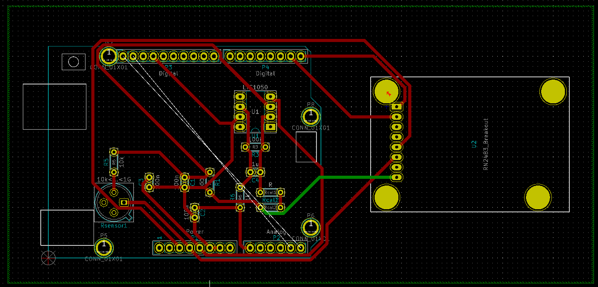
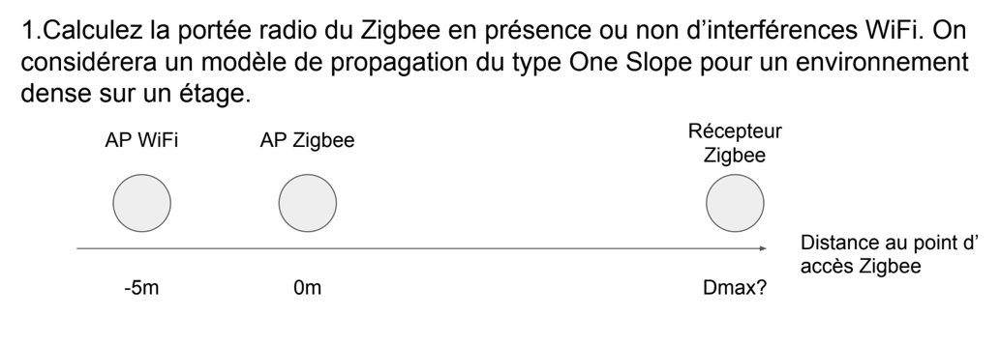
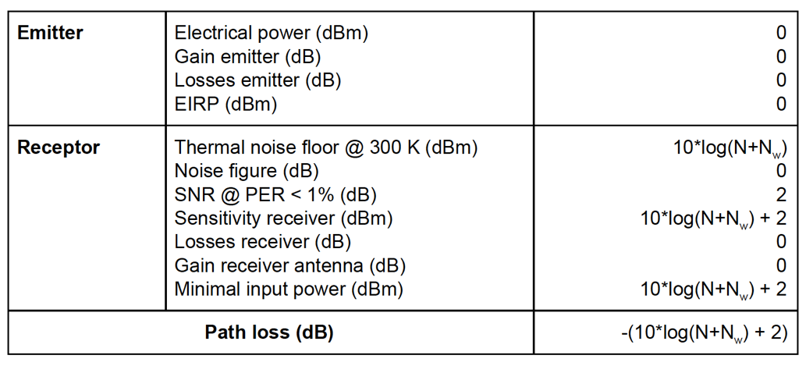
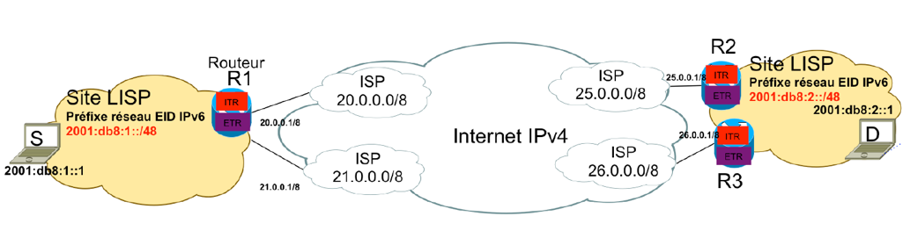
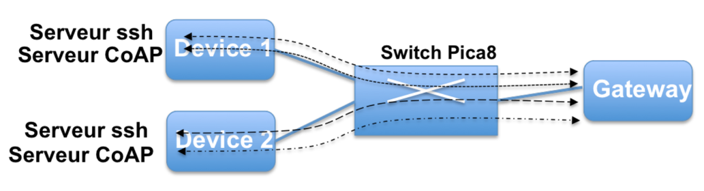

It is hard for me to learn this module because there are many things from the hardware domain. And I’m a computer science student from the software domain and I had never done about electronics, so it’s difficult to study the hardware. Firstly, I needed to use the software KiCad. Actually, it was the first time that I had heard about this software. I didn’t know how to use it. What’s more, I didn't know how to draw circuit diagrams with this software. When I did the Arduino Uno project with my partner, we needed to make all the tracks in the same side. But we didn’t success. We have tried so many times, but every time there was always one track in another side. Because all the tracks can’t cross each other is a big constraint. So it was really difficult for us.
I had never used KiCad before. So I have followed what the teacher explained during the course to start using the kiCad. The teacher usually made an example, in the screen, so I could learn about how to use KiCad. Sometimes the teacher did examples really quick so that I couldn't follow him. Then I found a specification about KiCad on the Internet. When I did the project Arduino Uno with my partner, this specification helped us a lot. So I think that listening to teacher and finding more information in the Internet both are useful. The last problem is to make all tracks in the same side. However, we have done it many times. But each time we can’t do that. Because all the tracks can’t cross each other. Finally, there was a track in another side.
During this module, the skills I mobilized are mainly operational knowledge. The theoretical and technological skills that I have acquired concerning the electronic part. From all courses of this module, I can learn some knowledge about electronic, open-source and hardware. What’s more, during the Arduino Uno project with my partner, we have learned how to draw the circuit diagram, import a library and draw the routing. So I have acquired mainly about the electronic part and the operation of the circuit.
I think this module is useful because I have learned some knowledge about the electronic part which I had never known. Actually, it’s the first time for me to know about the electronic and the Arduino. My partner and me have almost overcome all the difficulties during the project. I think the best way to learn is solving the problem by yourselves. As we come from computer science, we had many difficulties during this module. So we always ask the teacher, ask the peers and search on the Internet to solve the problems.
In the module of Communication, my project group and me had to calculate the exercise about how far a ZigBee wireless transmitter could transmit without exceeding the threshold of detection for the receiver. At first, without interference and then with the interference of the second transmitter Wi-Fi. It was then nearly the same to the second exercise, but we needed to calculate the maximum distance between the Wi-Fi disturber and ZigBee transmitter for a fixed distance between the transmitter and the receiver. This goal is to keep the power of the signal in reception always above the threshold of detection of a signal. We had two weeks to do this exercise.
For me, it’s really difficult to resolve this exercise, because I had never learned about the telecommunication. To realize these calculations, firstly I needed to understand the formulas in the slide. Then I have chosen to use the model of propagation of type One Slop with my project group to do this exercise. We have done a table to calculate the Path loss during this transmission with the interference of Wi-Fi.
Then we have calculated the interference of Wi-Fi and we can deduce the loss of power from the formula given in the table of the calculation. What’s more, the model One Slop gives us the formula to calculate the loss power between the transmitter and the receiver.
The second question is the reverse of the first one. We know the distance between the transmitter and the receiver and we need to calculate the maximal distance between the ZigBee transmitter and the Wi-Fi. We have calculated the power of the received signal ZigBee. Then we can calculate the interference of Wi-Fi with the formula. Lastly, we can calculate the maximal distance.
We have looked the slide provided by the teacher to know the formula and to understand the course better. When we did the exercise, we have also searched information on the web. Because we did not know clearly how to calculate the maximal distance while giving a fixed distance. What’s more, the calculations are not easy as there are many math formulas.
This exercise mainly allowed me to acquire theoretical skills on wireless communication. I know how to use the model of propagation of type of One Slop. I understand the formulas which for calculating these two questions. This course has broadened my knowledge in the telecommunication domain.
I think I have clearly understood the given problem and answered the questions, even if I have spent a lot of time on it than necessary. I find it quite entertaining and I have some knowledge about the wireless communication for the connected objects.
I also think the best way to learn is to do the exercise by yourselves. Before this course I had known nothing about the wireless communication. After listening to the course and doing the exercise, I knew better about that.
This year at INSA, I have taken the course of protocol for connected objects. I have learned about UMTS, GSM, 3G, 4G, 5G, LoRa, ZigBee, Sigfox, NB-IoT, MAC Layer, etc. I think it’s interesting because I have learned about protocols for connected objects on several levels. After that, we did research for the report under the given topics and we had also presentations during this course.
Actually, during this course I had to prepare the presentation about 5G in developing countries, my partner and me we have done the report about the NB-IoT, and I have done the report to compare the different MAC Layer protocols. So I had many things to look for on the web, write the report and prepare for the presentation. Firstly, I identified the definition on Wikipedia, that gives me a little idea about the knowledge. Then I found article resources that contain the information for each work. Finally, to go faster, I looked the articles and wrote the useful information into my report or prepare for the presentation.
This course has helped me improve my skills in protocol domain. All those things were learned thanks to lectures, researches, reading and discussions. You will be able to consult the work I did on this course in the annexes below.
Searching information for 5G, NB-IoT and MAC Layer and editing the report is really a good way to learn. I sensed that I learned a lot. Because each time, I prepared and looked for the information on the Internet. I need to understand and write the report. Then we came to class and we discussed with other students and our teacher, which allowed me to broaden my knowledge in the telecommunication network domain.
During last year, I have followed a course called energy for connected objects. An embedded system is an electronic system benefiting from limited resources in term of signal processing and of limited energy resources. In this course, I have learned about the electrochemical energy storage, the electrostatic storage and energy harvesting.
Actually, there nearly didn’t have encountered problem during this course. The only thing to do is to listen and understand during each lecture. This course allowed me to understand other problems in other subjects. Such as the main project in ISS, the social network for pollution, when the question about the energy source of sensors came up, I wondered that our sensors can get energy from solar panel.
The knowledge that I have acquired in this course is mainly theoretical and on the term of storage of energy.
Normally we should have a QCM for this course said by the teacher, but actually we didn’t have. For this course, I have learned the knowledge about the storage of energy and the energy harvesting. That has improved my skills in the domain of the energy.
This year I have followed a course called security for network of connected objects. Security brings in concerns for confidentiality, in addition to availability and integrity. I have been informed to some definitions such as reliability, availability, safety, integrity in security domain. I know that for most distributed systems, the security objectives of confidentiality, integrity and availability of information apply. A loss of confidentiality is the unauthorized disclosure of information. A loss of integrity is the unauthorized modification or destruction of information. A loss of availability is the disruption of access to or use of information or an information system.
A fault can activate an error, then an error can propagate a failure. Physique fault, fault of conception, single event latch-up and intrusions are examples for the type of fault. There are many different type of attacks, such as passive listening, interception, relay attack, masquerade, covert channels, side channels, backdoor, malware and DoS (denial of service). And we have different defenses for the fault, for example, fault prevention, fault tolerance, fault elimination and fault prevision. For the fault treatment, there are diagnostic, passivation, reconfiguration and reinitialization.
Finally we have learned learned about analysis of risks. The method EBIOS, attack trees, attack defense trees (ADT) and Honeypot.
This course has given me some knowledge in the security domain. Actually, I have already followed a course about security last year. So I have the base knowledge for the security. This time I have learned about the attributes of security, the type of fault, the type of attack and analysis of risk. This course is easy to understand even if you don't have the base knowledge. It can be showed to non-scientific people.
During this course I have done two exercises. The first one is about LISP (Locator Identifier Separation Protocol).
The question is how an IPv6 packet, leaving S can reach its destination D, then detail the flow of actions that follows a loss of IP connectivity due to a failure of router R2 interface. The second one is about SDN (Software Defined Network).
The question is that what are the necessary openflow rules to install on the SDN switch to let the UDP CoAP traffic flow from the Gateway to Device 1 and let the Gateway open the ssh session on both devices.
For the first question: S generates IPv6 packet to D, IPv6 network forwards IPv6 packet to R1. ITR: looks the dest@, checks if it’s a LISP site, verifies on the mapping or ask to the EID-RLOC mapping resolution system, the MR (Map-Resolver) sends the request to MS (Map-Server) (to know the RLOC of an EID). R3 tells to MS2 that if MS2 wants to reach 2001:db8:1::/48 he has to pass to R3, R3 answers to R1 the RLOC related to EID.
Firstly, R1 sends an IPv4 packet with: @dest = 25.0.0.1, @src = 20.0.0.1, the IPv6 packet encapsulated. Secondly, R2 decapsulated the Ipv6 packet with: @dest = 200:db8:2:1, @src = 2001:db8:1:1 Finally, R2 sends the packet to D.
For the second question: We need to identify the match rules.
I have acquired theoretical skills during each lecture and operational skills during the two labs. I have learned about the SDN and LISP and that has broadened my knowledge in the domain of the network and the openflow. For the two labs, I have really configured the network by myself and I had a better understand about what I learned during this course.
I think this course is interesting, especially the two labs. We just had two labs and I wonder it’s not enough. Because when I finished the first lab, I didn’t have much time to do the second one. Maybe I have taken so much time for the first one. Anyway, this course has improved my skills about network knowledge and configuration about the network.
This course brought me a general knowledge about team leading, project management and market studies. During this course, I was able to discuss topics such as design thinking, anticipating technological developments, spreading innovation, management, etc. It shows that many inventions do not reach the status of innovations for marketing issues, marketing not well planned or because the public is not yet ready to receive them. So they will not succeed and disappear in the market. Because there are some key constraints for product diffusion. What’s more, we have to manage our group and project well. If we have a conflict in a group, we need to fix as soon as possible. Before we begin to work, we need to know about each other well.
The skills that I have acquired is more about relationship and management in a group. It seems to me that what have been done during this course will be directly reusable in the work. That is what I’m going to do now.
I think this course is interesting. I have learned about the group management, the difference between invention and innovation, business, etc. This course has improved my knowledge in the design thinking, innovation and business domain.
As we talk about creativity and innovation, learning about the TRIZ method is a kind of way to know about creativity and innovation. During this course, I have thought about several evolutions of systems, such as the bike or the calculator. And then I have been demanded to use the nine laws and the cyclic model of my project, the social network for pollution.
When I practiced the cyclic model for my project, I realized that my project is still in the growth phase. As there are birth, growth, maturity and decline phases. Because air quality monitor is not really deployed by each city for people to access easily. And the platforms of air quality today are mainly expensive. We need to do a platform with low cost and can be accessible at anytime for anyone. The purpose is to make people be informed about the air quality. So our project is still growing.
The skills that I have learned during this course is mainly theoretical and practical. I have learned about the cycle model on biological systems, from birth to decline, and nine laws about evolution. I have known about the contradiction model and resolution methods. If we didn’t have a contradiction, we would not have a problem.
In summary, this course brought me a good knowledge in the creativity and innovation domain. During this course, we just know a little about the TRIZ method so there still are many potential things need to learn. It’s good that we know more about the TRIZ method so that we can practice it during future work.
During the course of software engineering, I have learned about the method of project management and different type of test for software testing.
For the models of development, such as waterfall model, V model, Incremental model, Spiral model, unified process and Agile model. What's more, I have learned one of the most important Agile method is Scrum, which produces business values with short time period. A functional software is produced each 3 to 4 weeks is called sprints. At the end of each sprint, everyone can see the software running and decide whether to deliver or improve it during an additional sprint.
For the test, I have learned unit tests, integration tests, system tests, validation tests, functional tests and technical tests. I have practiced mainly about technical tests, for which I have used two approaches, write box and black box.
This course has broaden my knowledge in the software engineering and testing domain. I think is critical to know that for a computer science student. Actually, I have already the base knowledge about this domain. This time I have been more improved and I will practice the useful methods and tests during the future working.
I think this course is mainly about theoretical in software engineering and software testing domain. This course has introduced me the knowledge about the project management method and test process. And we have practiced one of the project management methods into one of our projects. We have used the method Scrum to do the SOA (Software Oriented Architecture) project. That I have written in the descriptive part.